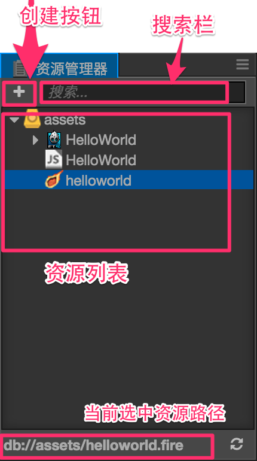
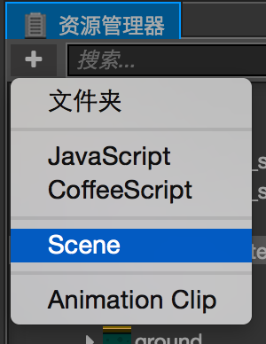
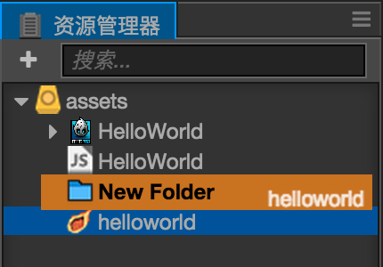

资源管理器（Assets）
资源管理器是我们用来访问和管理项目资源的工作区域。在开始制作游戏时，添加资源到这里通常是必须的步骤。您可以使用HelloWorld模板新建一个项目，就可以看到资源管理器中包含了一些基本资源类型。
界面介绍
资源管理器将项目资源文件夹中的内容以树状结构展示出来，注意只有放在项目文件夹的assets目录下的资源才会显示在这里。关于项目文件夹结构说明请阅读项目结构一节。下面我们介绍各个界面元素：

- 左上角的 创建按钮 用来创建新资源
- 右上的文本输入框可以用来搜索过滤文件名包含特定文本的资源
- 面板主体是资源文件夹的资源列表，可以在这里用右键菜单或拖拽操作对资源进行增删修改。
资源列表
资源列表中可以包括任意文件夹结构，文件夹在资源管理器中会以 图标显示，点击图标左边的箭头就可以展开/折叠该文件夹中的内容。
图标显示，点击图标左边的箭头就可以展开/折叠该文件夹中的内容。
除了文件夹之外列表中显示的都是资源文件，资源列表中的文件会隐藏扩展名，而以图标指示文件或资源的类型，比如HelloWorld模板创建出的项目中包括了三种核心资源：
- 图片资源：目前包括
jpg,png等图像文件，图标会显示为图片的缩略图。  脚本资源：程序员编写的 JavaScript 脚本文件，以
脚本资源：程序员编写的 JavaScript 脚本文件，以js为文件扩展名。我们通过编辑这些脚本为添加组件功能和游戏逻辑。- 场景资源：双击可以打开的场景文件，打开了场景文件我们才能继续进行内容创作和生产。
更多常见资源类型和资源工作流程，请阅读资源工作流程一章。
创建资源
目前可以在资源管理器中创建的资源有以下几类：
- 文件夹
- 脚本文件
- 场景
- 动画剪辑
点击左上角的创建按钮，就会弹出包括上述资源列表的创建资源菜单。点击其中的项目就会在当前选中的位置新建相应资源。

选择资源
在资源列表中可以使用以下的资源选择操作：
- 点击来选中单个资源
- 按住Ctrl或Cmd点击，可以将更多资源加入选择中
- 按住Shift点击，可以连续选中多个资源
对于选中的资源，可以执行移动、删除等操作。
移动资源
选中资源后（可多选），按住鼠标拖拽可以将资源移动到其他位置。将资源拖拽到文件夹上时，会看到鼠标悬停的文件夹以橙色高亮显示。  这时松开鼠标，就会将资源移动到高亮显示的文件夹下。
删除资源
对于已经选中的资源，可以执行以下操作进行删除：
- 右键点击，并选择弹出菜单中的
删除 - 选中资源后直接按Delete（Windows）或Cmd + Backspace（Mac)
由于删除资源是不可撤销的操作，所以会弹出对话框要求用户确认。确定后资源就会被删除，无法从回收站（Windows）或废纸篓（Mac）找回！请一定要谨慎使用，做好版本管理或手动备份。
其他操作
资源管理器的右键菜单里还包括以下操作：
重命名：对资源进行重命名新建：和创建按钮功能相同，会将资源添加到当前选中的文件夹下，如果当前选中的是资源文件，会将新增资源添加到和当前选中资源所在文件夹中。在 资源管理器 （Windows）或 Finder （Mac）中显示：在操作系统的文件管理器窗口中打开该资源所在的文件夹。前往 Library 中的资源位置：打开项目文件夹的Library中导入资源的位置，详情请阅读项目结构一节。显示 UUID：在控制台窗口显示当前选中资源的 UUID。刷新：重新执行该资源的导入操作。
另外对于特定资源类型，双击资源可以进入该资源的编辑状态，如场景资源和脚本资源。
过滤资源
在资源管理器右上的搜索框中输入文本，可以过滤出文件名包括输入文本的所有资源。也可以输入*.png这样的文件扩展名，会列出所有特定扩展名的资源。

继续前往场景编辑器说明文档。